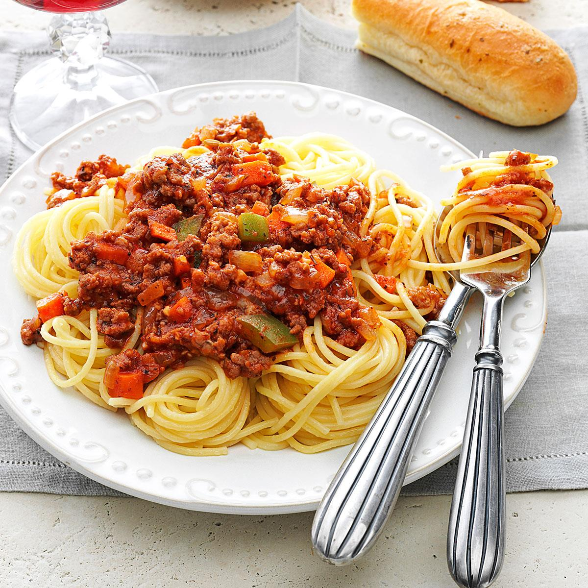

Chef's Choice Pasta
Delicious Homemade Pasta
Recipe by: Amani Ngomasele
Ingredients:
- 1 clove garlic
- 1 teaspoon salt
- 2 tablespoons olive oil
- 14.5 ounces tomato sauce
- 100 grams of angel hair pasta
- Ground beef
- 1 teaspoon black pepper
Instructions
- Bring a medium pot of salted water to a boil, add pasta and let it cook for 5 minutes.
- While pasta cooks, fry the ground beef until well done, remove from the heat, and set aside.
- When the pasta is cooked, drain it, reserving half a cup of pasta cooking water.
- Immediately return the hot, drained pasta to the pot. Pour the tomato sauce and ground beef mixture over the pasta. Let it cook for 15 minutes.
- Serve and enjoy!

This Chef's Choice Pasta is my favorite because it's delicious. The combination of pasta, flavorful sauce, and other ingredients makes me enjoy it, and it is simple to make.
If you're looking for more amazing recipes, be sure to check out BEST One-pot Spaghetti for a wide variety of free recipes online.